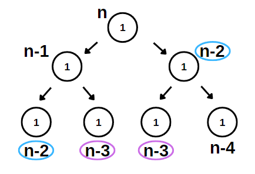
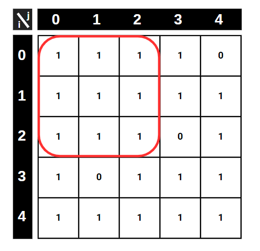
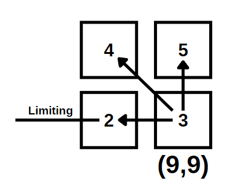
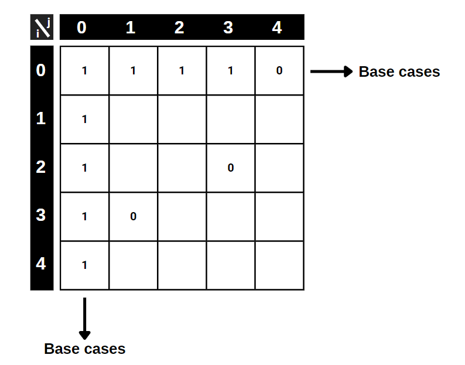
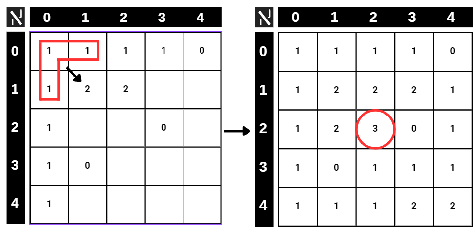

understanding the beauty of dynamic programming
Hello, in this blog we are going to explore the beauty of the dynamic programming applications. We all know recursion is cool and it helps for writing exquisite programs by reducing the computation time significantly. Also, it looks neat and easy to understand if your program involves recursive properties. But not all the time does recursion save us while programming. In some cases, we have to be more dynamic.
A Brief Introduction to Dynamic Programming
How can a program be dynamic, you might ask? It is through memoization! (not memorization :D). Maybe in your COMP classes, you have probably seen the famous Fibonacci algorithm example. Let’s remember it before solving our example problem. The Fibonacci algorithm is very simple and it can be written as:
FIB(n) = if n<=1: 1 else: FIB(n-1) + FIB(n-2)
It feels powerful to write a whole program in just one sentence using recursion. But, in this version of FIB, the complexity of the calculation is O(2n), which is exponential (which is really, really bad!). I mean, you can still run it on your computer and solve it, but if you plug in some really big numbers, even if you had as many computers to help you as there are all the atoms in the universe, you still wouldn’t be able to solve the Fibonacci. You can’t solve it in your lifetime and you will die without seeing the answer. The reason is that every time we call the recursion to solve the smaller subset of the problem, we calculate the same FIB(n)s over and over again. Therefore, we need to cache the already calculated subproblems.

So the new version becomes something like this:
1: Results = {}
2: FIB(n):
3: if n in Results:
4: Return Results[n]
5: if n<=1:
6: Return 1
7: else:
8: Results[n] = FIB(n-1) + FIB(n-2)
9: Return Results[n]
Calculating the Complexity of Dynamic Programs
This new version runs in O(n) time. To understand this, we can derive a formula which you can use for every dynamic programming application.
T(n) = O(Number of Unique Inputs to Your Function) x O(Cost of Merging Subsets)
In our case, the number of unique inputs is n, because FIB(n) can take n inputs at max. The cost of merging is O(1) because the summation in line 8 is done in constant time.
Parking Lot Problem
Now we can move on to a more complex problem and understand how the “unique inputs” logic works and how we can benefit from the use of tables in dynamic programming. Imagine you are going to park your car at a parking lot and you want to be isolated from other parked cars as possible because you want to reduce the risk of your car being damaged. The parking lot is represented in a 2D matrix where 0 means there is already a car parked there, and 1 means empty. So the objective is to find the biggest square which is formed by 1s. In the example shown below, the answer we are looking for is highlighted.

Before starting, you can turn off your brain and try to find the biggest square by trying every possible square, and burn your CPU. But not surprisingly, we will develop something more elegant and faster than this approach.
How to Solve?
To solve this problem, we can use recursion to search through the LOT_MATRIX. Now, let P(i,j) denote the biggest square that can be drawn where the i & j points to the bottom-right corner. (You can choose any option, top-left vs.) Now, the biggest square can be obtained by the algorithm:
If the lot is empty:
-> P(i,j) = MIN(P(i-1,j), P(i,j-1), P(i-1,j-1)) + 1
The meaning here is that, since we decided P(i,j) to represent the bottom-right corner of the biggest matrix, the biggest that we can pick is determined by the neighboring three squares + the one itself. For example; if the (9,9) spot is empty, then the biggest square that we can draw is limited by the minimum of (9,8),(8,9),(8,8) because the limiting factors are determined by the neighboring squares. So, imagine if we can draw a really big square from (8,9) but a tiny square using (9,8), that means there is a limiting 0 that is embedded in spot (9,8). So, from the (9,9) spot, we can draw a square 1 + P(9,8).

Memoization Table
Now, let’s return to our question. We are still missing a very crucial thing which we talked about earlier. Yes! You are right, it is memoization. We don’t want to calculate the same maximums in every recursion, so we have to record the subproblems to a table. Let’s form the P(i, j) table.
At first, we have an empty table. To start solving, we have to insert the base cases, which in case we have 2 different ones. The first case is that, we can directly write the first column and the first row from the LOT_MATRIX, since we can not draw a bigger square than 1x1 if the (i,j) is the bottom-right corner. The other base case is that we can directly transfer zeros to our table because we can not choose a square which involves 0 in it.

Here is the P(i,j) table with base cases written. The rest is easy, using our one-line algorithm above, we are going to fill the table from top to bottom. In every step, we check the minimum of the three neighboring (limiter) squares and add 1. We don’t have to deal with 0s because we already handled them in base cases.
Complexity of the Parking Algorithm
After completing the table, the highest number among all squares will give us the location of the bottom-right corner of the biggest square, which only contains 1s. With this approach, using our formula given above we can easily calculate the complexity of the algorithm that we generated. Using the table for memoization, we only have n2 unique inputs that we can calculate for P(i, j) since i and j can be assigned up to n inputs. Also, using our table we can easily see that the n x n table needs to be filled to find the largest location. The Merging cost is constant in our case, because the MIN operator compares only 3 inputs at every step.

T(n) = O(n2) x O(3) = O(n2) is the total complexity. Like the Results list in the Fibonacci example, we used a matrix to save our solutions to apply memoization characteristic. Using our rule, we filled up the table and search our solution there. This is the beauty of dynamic programming. It is the art of filling the subproblem results table. The problem might seem very hard but using only a simple recursion and remembering those subproblem results, we can form faster programs.